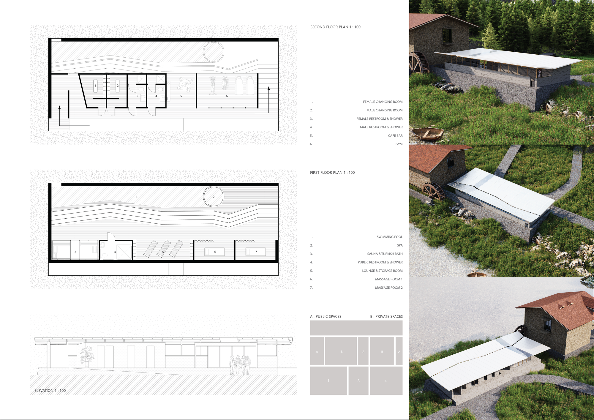
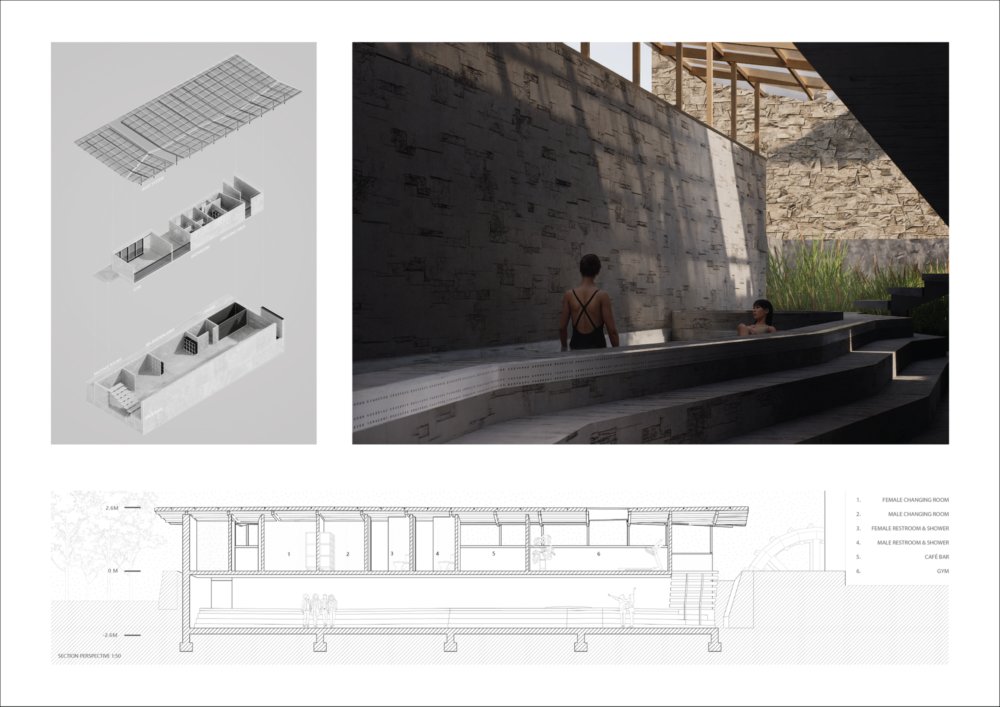
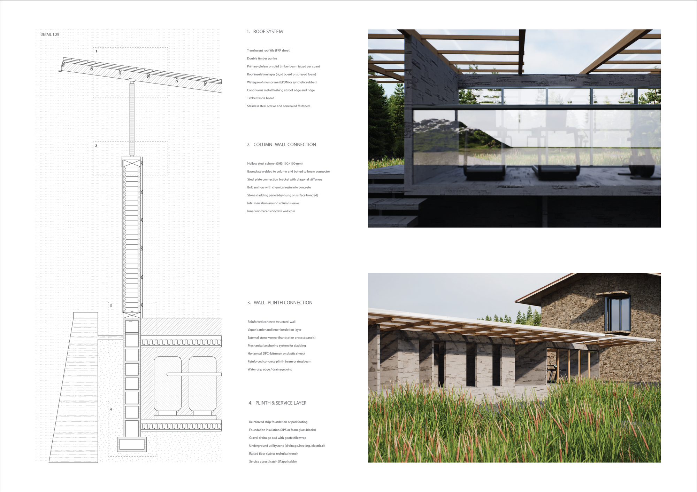

Between Walls and Reeds is a riverside spa set along the Vez River. The design works the threshold between built walls and the soft edge of the reed bank, choreographing a slow sequence of bathing spaces that move between enclosure and openness, masonry and water, architecture and wetland.
Between Walls and Reeds 是一座沿 Vez 河布置的河岸温泉。设计经营“墙体”与“芦苇软质边界”之间的过渡，编排出一段缓慢的沐浴空间序列，在围合与开敞、砌体与水、建筑与湿地之间往复游走。




